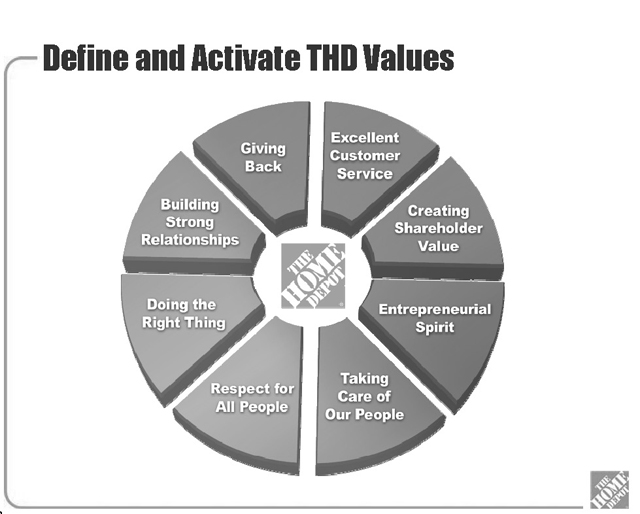
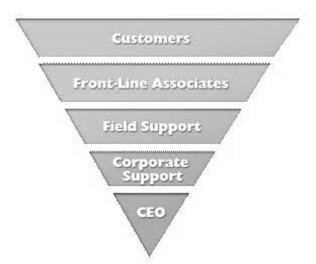

In January 2007, Home Depot was facing a leadership crisis. After months of pressure from shareholders, the company’s board of directors had ousted high-profile CEO Robert Nardelli and replaced him with a much less visible executive named Frank Blake. The stylistic differences could not have been more striking. Though both Nardelli and Blake had joined Home Depot from General Electric, they seemed to come from different planets. Nardelli was regarded as a tough authoritarian manager who had shunned much of the cultural foundation of Home Depot and given a cold shoulder to its founders, Arthur Blank and Bernard Marcus.Case based on interviews with Brad Shaw (personal communication, September 2009). Information also based on Home Depot, Inc. (2009).
Blake decided from early on to try to reconnect Home Depot to its roots. Whereas Nardelli and his team had enjoyed catered lunches on the top floor of the headquarters building, Blake instructed the senior executives to eat in the first floor cafeteria with everyone else, and pay for it themselves. He reached out to Blank and Marcus and asked them to serve as advisers as the company worked to reconnect with its customers.
Blake based his communication platform on two images, one called “the value wheel” and the other “the inverted pyramid” (see Figure 11.1 "Home Depot’s Value Wheel" and Figure 11.2 "Home Depot’s Inverted Pyramid").
Figure 11.1 Home Depot’s Value Wheel
Source: Used by permission of Home Depot, Inc. (2009).
Figure 11.2 Home Depot’s Inverted Pyramid
Source: Used by permission of Home Depot, Inc. (2009).
In his talks with employees, Blake began showing the Value Wheel and Inverted Pyramid from the very first day of his tenure as CEO. The wheel portrayed Home Depot’s core values and the inverted pyramid emphasized that the company’s most important objective was the focus on customers and the frontline associates who directly served them.
Blake coupled this outreach to employees with some strategic decisions, as well. He made the difficult decision to spin off HD Supply, one of Nardelli’s pet initiatives, and invest instead in the core retail business. At the same time, new investments were made in improving frontline customer service.
To get the message across to associates, Blake made use of some existing Home Depot channels. For example, all 300,000 Home Depot associates are required to take a monthly safety and protection quiz. The company tracks participation in this essential activity. Blake decided to use 1 minute of the quiz each month to present a brief message to all frontline associates. He also asked employees to offer suggestions on how to improve the company through an existing In-Box program. Even though headquarters receives from 300 to 400 of these ideas each week, Blake reads them all.
As Brad Shaw, Home Depot’s head of communication, explained,
We’ve taken our frontline associates and given them ongoing access to the CEO. Frank used to be practically unknown and now he’s instantly recognized when he visits our stores. We bring in frontline folks, 20 year associates, on a regular basis and Frank meets with them to provide an opportunity to reflect on what has made HD great. We haven’t changed the tools we use, we’ve changed the message.Interviews with Brad Shaw (personal communication, September 2009).
Shaw maintains that the message conveyed by Blake’s action is really quite simple. “You have to listen to your people,” he says. “The days of centralized top-down communication are over. It’s a two-way communication process. Frank understands that and our frontline associates understand it. We’re working to educate our management in the middle of how important this is.”
Blake has emphasized the need to listen to the frontline employees particularly at the company’s headquarters. When the CEO is reading the company suggestion box and spending time with frontline employees, other executives tend to follow the example. “What we’re finding is that when Frank asks a question about a comment he read in the In Box, other executives want to be prepared with answers, so they’re paying closer attention to the comments themselves,” says Shaw.
In declaring the importance of the frontline employees, Home Depot has backed its words with definitive action. Though the company is coping with the impact of the recession along with other retailers, it had chosen to maintain the 401(k) match for employees. Unlike many of its competitors, Home Depot is continuing to grant merit increases and has paid record employee bonuses. “Other companies are fighting not to lay people off,” says Shaw. “We want to stay focused on enhancing Home Depot’s reputation as a good place to work.”
Home Depot is also seeing positive results in terms of increases in same-store sales, which have recently been better than its primary competitor. Even though the company’s gross revenues have fallen, profit in recent periods has exceeded forecasts.
Blake’s primary audiences remain customers and frontline employees, but he will occasionally grant media interviews if he feels they provide an opportunity to raise the company’s profile, rather than his own. “Frank is authentically humble, he doesn’t want media attention but he will do it if we feel it is critically important in advancing other Home Depot messages,” Shaw explains. He continued,
He is also active in social media on his own. In some cases he will respond to blog postings on his own. He is creating a presence in social media and we don’t try to control that. It is about engagement and the best way to use social media is in an unfiltered way.
In Blake’s 3 years at the helm, the company has shown marked improvement in customer service. An important measure that many retailers use is called the Net Promoter Score. The company collects over 150,000 responses from customers each week and counts only positive scores about its service that rate it 9 or above on a 10-point scale. By this measure, customer satisfaction has increased over 1,000 basis points in 3 years. “The example Frank uses is that he can pick up a bottle of packaged water and there is no direct correlation between that bottle of water and the employees who packaged it. It’s not easily apparent if they are happy or not,” Shaw observes. “But in our case if one of our employees is unhappy you as a customer can feel it directly in the way they serve you.”
The Home Depot and Frank Blake’s example demonstrates the power of the chief executive officer also serving as a chief communicator to employees. In this case, it is clearly achieving results.